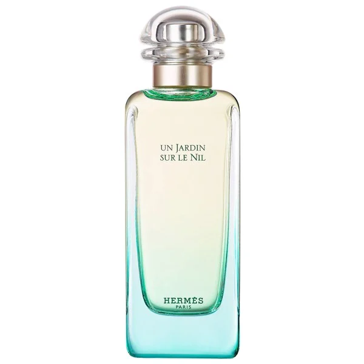

|

|
Thương hiệu: Hermes
Xuất xứ: Pháp
Năm phát hành: 2005
Nhóm hương: Quả bưởi, Quả xoài, Cây hương bồ, Hoa sen, Quả cà chua
Phong cách: Thanh lịch, Tinh tế, Tươi mới
Hương đầu: Củ cà rốt, Quả bưởi, Quả cà chua, Quả xoài xanh
Hương giữa: Quả cam, Hoa mẫu đơn, Cây Bồ Hoàng, Hoa lan dạ hương (Hiacynth), Hoa sen
Hương cuối: Hương Labdanum, Hoa diên vĩ, Quế, Xạ hương, Nhang (Hương)
Số lượng nhập hàng:
Số lượng xuất hàng:
|
|
Hermes Un Jardin Sur Le Nil
Giá: 2.500.000 VNĐ
Giảm còn: 2.200.000 VNĐ
(Tiết kiệm: 12%)
|
Hermes Un Jardin Sur Le Nil được ra mắt vào năm 2005 dưới sự nghiên cứu đầy
tâm huyết của chuyên gia nước hoa Jean-Claude Ellena, mong muốn mang lại một
khu rừng đầy màu sắc, ngập tràn trái cây và rực rỡ, thơm ngát của các loài hoa
bên cạnh con sông Nil tại Assouan xa xôi xinh đẹp. Nhà Hermes đã mang tới cho
các tín đồ nước nước một hành trình mùi hương thực sự tuyệt đẹp bằng cảm xúc và
trái tim của bà mẹ thiên nhiên. Mở đầu bằng sự phong phú, tươi mát của Cà rốt,
Bưởi, cà chua và quả xoài xanh, sự thanh nhẹ cùng mùi hương trái cây bao phủ khắp
nơi khi bạn xịt Hermes Un Jardin Sur Le Nil lần đầu tiên, một sự thư giãn tự nhiên
và gây nghiện đối với bất kỳ ai vô tình đi ngang qua. Hành trình mùi hương được
di chuyển tới các tầng hương khác sau khi lên da một thời gian ngắn, nơi có sự
hiện hữu của hoa sen, của Cam và của Hoa mẫu đơn, nếu tinh ý bạn sẽ nhận ra rằng
Hermes Un Jardin Sur Le Nil là một mùi hương Unisex, nhưng lại chứa các hương hoa
chủ đạo rất nhiều, tựa như nó dành cho phái nữ hoàn toàn vậy. Nhưng khi
Hermes Un Jardin Sur Le Nil đi về trạm cuối với Quế, xạ hương và hoa Diên vĩ,
sự trung hòa về mặt giới tính đã được thể hiện rõ, để Hermes khẳng định lại một
lần nữa với tất cả mọi người rằng Hermes Un Jardin Sur Le Nil chính là 1 trong
những mùi hương Unisex đẹp nhất, tươi mát nhất, thiên nhiên nhất, xứng đáng để
cho bất kỳ giới tính nào cũng phải dành sự ưu ái một cách tuyệt tối cho kẻ lạ mặt này.
|